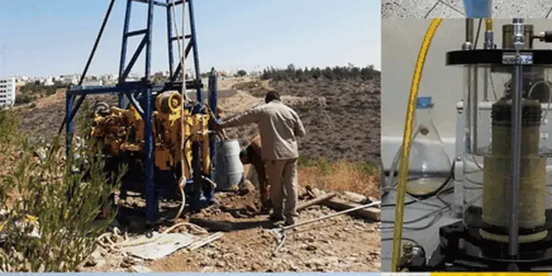

En nuestra oficina de Lleida, ofrecemos servicios integrales de geotecnia para proyectos residenciales, industriales e infraestructuras. Realizamos campañas de reconocimiento del subsuelo, ensayos de laboratorio, diseño de cimentaciones y análisis de estabilidad, siempre adaptados a las condiciones locales. Nuestro equipo combina equipos calibrados con metodologías contrastadas para entregar informes técnicos conformes a la normativa vigente. Desde estudios previos hasta el control de ejecución, acompañamos al cliente en cada fase, garantizando seguridad y eficiencia. Conozca más sobre nuestra compactación dinámica y columnas de grava como soluciones de mejora del terreno en la región.

Método y cobertura
Contexto regional
Nuestra firma cuenta con experiencia regional consolidada en los suelos de la Depresión del Ebro, habiendo participado en promociones residenciales, naves logísticas y obras lineales en Lleida y su entorno. Disponemos de un laboratorio in situ con equipos calibrados para ensayos de clasificación, resistencia y deformabilidad. Coordinamos estrechamente con los laboratorios de control de calidad locales y con la administración autonómica, garantizando informes conformes al CTE y a las ordenanzas municipales. Este conocimiento del terreno y del marco normativo nos permite anticipar problemas típicos como los suelos expansivos o las cavidades en yeso, ofreciendo soluciones técnicas viables y económicas.
¿Necesita una evaluación geotécnica?
Respuesta en menos de 24h.
Email: contacto@laboratoriomecanicadesuelos.orgVideo del proceso
Estándares relevantes
En España, la normativa geotécnica principal es el Código Técnico de la Edificación (CTE), en particular el Documento Básico SE-C (Seguridad Estructural: Cimientos). Para cargas sísmicas se aplica la NCSE-02, mientras que para obras lineales se emplea la Instrucción de Carreteras (Norma 6.1-IC). En nuestros laboratorios seguimos estándares UNE-EN (por ejemplo, UNE 103-600 para ensayos de hinchamiento libre) y la normativa técnica aplicable (D1586 para SPT, D4318 para límites de Atterberg). Toda nuestra instrumentación está calibrada bajo acreditación ENAC, asegurando la trazabilidad y validez de los resultados.
Preguntas comunes
¿Qué tipo de estudios geotécnicos se requieren para una obra en Lleida?
Para la mayoría de edificaciones, el CTE exige un estudio geotécnico con al menos tres sondeos o calicatas, ensayos de laboratorio (granulometría, límites, humedad, densidad) y un informe que determine la tensión admisible del terreno. En zonas de yesos o arcillas expansivas, se añaden ensayos específicos como hinchamiento libre y presión de expansión. También es recomendable realizar un estudio geofísico si se sospecha de cavidades kársticas.
¿Cómo afectan los suelos arcillosos expansivos a las cimentaciones en Lleida?
Las arcillas expansivas presentes en el llano de Lleida (esmectitas) pueden hincharse al humedecerse y contraerse al secarse, generando movimientos diferenciales en las cimentaciones. Para mitigarlo, se recomienda profundizar la cimentación por debajo de la capa activa, emplear losas de cimentación rígidas o tratar el terreno con cal/cemento. Nuestros informes incluyen la clasificación de expansividad según el índice de expansión libre y proponen soluciones constructivas adaptadas.
¿Qué normativa sismorresistente aplica en la provincia de Lleida?
La Norma de Construcción Sismorresistente Española (NCSE-02) es de aplicación en toda España. Lleida se encuentra en una zona de sismicidad moderada (aceleración básica 0,04-0,08 g), por lo que para edificios de importancia normal o especial se requiere un estudio de respuesta sísmica del terreno. En suelos blandos o con potencial de licuefacción, pueden ser necesarios ensayos de penetración estándar (SPT) y análisis de amplificación sísmica.
¿Cuánto tiempo suele llevar un estudio geotécnico para una nave industrial en el polígono de Lleida?
Un estudio geotécnico completo para una nave industrial típica (2000-5000 m²) puede completarse en 3-4 semanas, incluyendo 2-3 calicatas o sondeos, ensayos de laboratorio y redacción del informe. Si se requiere tratamiento del terreno (por ejemplo, columnas de grava o compactación dinámica), los plazos se amplían según la magnitud de la mejora. Siempre coordinamos con la propiedad y la dirección facultativa para ajustar el cronograma.
Ubicación y área de servicio
Atendemos proyectos en Lleida.